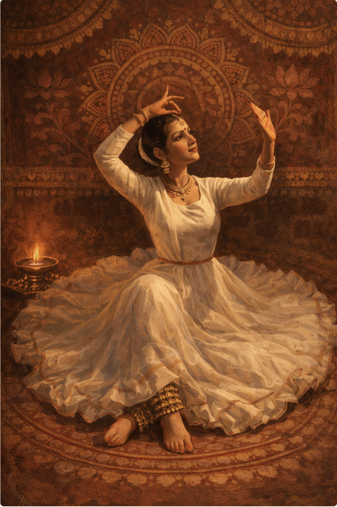
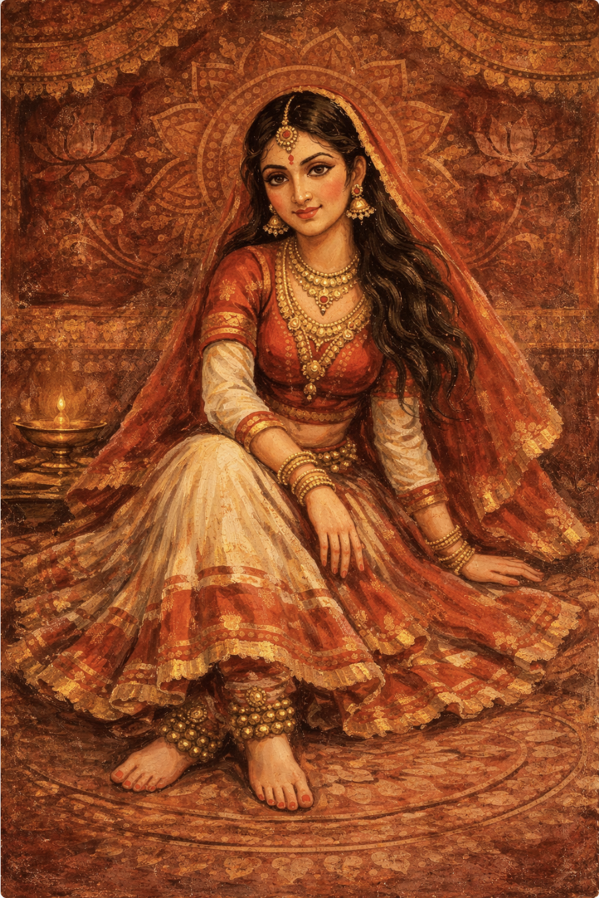

Kathak is one of the eight major forms of Indian classical dance, known for its rhythmic footwork, lightning-fast spins, and expressive storytelling. Its name is derived from the Sanskrit word Katha (story) and Kathakar(storyteller).

Chakkars(spinning)

Shringaar

Sitting pose
The Evolution of Kathak
Ancient Origins
Originally, Kathak was a religious performance. Wandering bards called Kathakars traveled between temples in Northern India, using music, dance, and gestures to narrate epics like the Mahabharata and Ramayana. At this stage, it was deeply rooted in Bhakti (devotion).
The Mughal Influence (The Courtly Shift)
During the 16th and 17th centuries, the dance moved from temples to the Mughal courts. This transition changed the style significantly:
As the dance flourished in different regions, distinct "schools" or Gharanas emerged, each with its own flavor:
Under British colonial rule, Kathak (along with other Indian arts) faced a decline as it was often misunderstood or suppressed. However, in the early 20th century, pioneers like Lady Leela Sokhey and the Maharaj family (including the legendary Birju Maharaj) worked to revive and institutionalize the art form, bringing it to the global stage.
Historically rooted in temples and courts, Kathak has successfully transitioned into a pillar of modern global entertainment through:
The Gharana System
Decline and Revival
Kathak in Modern Pop Culture